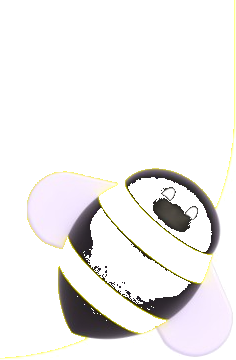
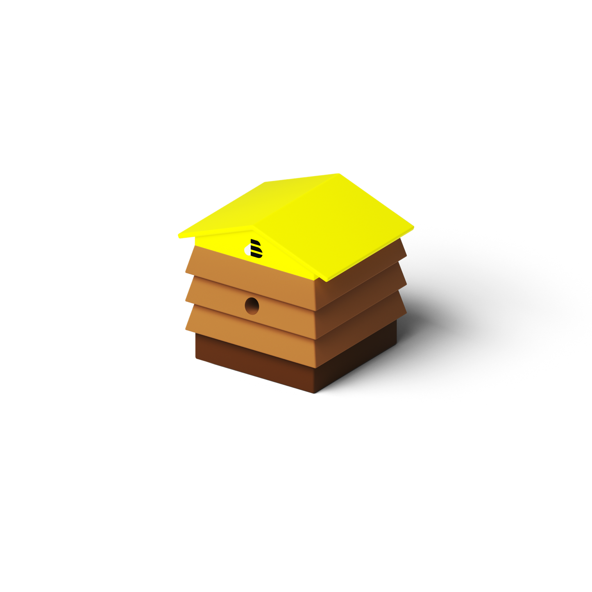

BEES
Research evidence should change the work
Jira demand, delivery & research traceability
BEES Research Team

Pilot framing · team-provided Commercial work item slides
Team
BEES Research
Demand traceability & Jira process enablement

CONFIDENTIAL
BEES Research Team
Agenda
01
Why evidence must change the work
02
Demand types, hierarchy & cascade
03
Linking research, rules & next steps
Pilot agenda
Research / Jira process / pilot
Research evidence should change the work, not disappear in a report.
The research team makes evidence findable when each study has the right Jira home and the right link to demand.
Pilot framing · team-provided Commercial work item slides
01 / The map
The work moves from commercial intent to delivery detail.
Each work item answers a different question. The hierarchy is a translation system, not a list of synonyms.
01
DemandBusiness Case
What problem and value?
- Strategic problem
- Business outcome
- Global Rank
02
ApproachFeature Request
What capability or approach?
- Specific gap
- Feature scope
- Success Criteria
03
DeliveryInitiative → Epic → Task
How will teams deliver it?
- Delivery boundary
- Team work
- Build and validation
process/jira-projects-and-hierarchy.md
02 / Demand types
A Business Case defines value. A Feature Request defines the approach.
Do not force a feature solution into a Business Case or leave a Feature Request at problem-only level.
BEESIMP · demandBusiness Case
Problem- and outcome-led. It can span multiple capabilities and may become one or more Initiatives.
BEESIMP · demandFeature Request
A specific, evaluable capability gap. It is usually narrower and can address one slice of a Business Case.
process/jira-projects-and-hierarchy.md · skills/prodops-beesimp-bc-fr-structure/SKILL.md
03 / Feature Request taxonomy
Feature Requests can describe four different kinds of change.
Taxonomy helps Product interpret the request. It does not replace scope, evidence, or Success Criteria.
01
Feature Activation
Use an existing capability in a new market, partner, or context.
Feature Improvement
Improve an existing capability or journey.
New Feature
Create a capability that does not exist today.
New User Experience
Introduce a new end-to-end interaction or journey.
docs/prodops-beacon.md · taxonomy guidance
04 / Priority language
Global Rank is a demand signal, not a delivery status.
A lower positive number means higher position in the company-wide demand stack. It does not turn an Initiative into a Business Case.
01
VP Rank
Priority within one Requester Structure or pillar.
Local order
02
Global Rank
Company-wide order validated by executive leadership.
Demand stack
03
Initiative priority
Delivery context on the BEESIP Initiative. It is not Global Rank.
Not Global Rank
process/global-rank-and-vp-rank.md
05 / The cascade
Rank connects demand to delivery without collapsing the layers.
Business Cases and Feature Requests carry demand priority. Initiatives organize delivery. Epics and Tasks describe the work teams execute.
Business CaseBEESIMP
Strategic problem + outcome. May span multiple capabilities.
Feature RequestBEESIMP
Specific approach or capability gap. Usually one evaluable slice.
InitiativeBEESIP
Solution with clear scope and purpose. Delivery lifecycle and urgency.
Epics + TasksBEESIP
Specific team work. Dependencies, development, validation, and risk.
process/jira-projects-and-hierarchy.md · team-provided process visual
06 / Research in Jira
Researchers work across three Jira projects.
The project tells you which operational layer the issue belongs to.
BEESUXR
Research operationsResearch Epic
- Study scope
- Evidence and findings
BEESIP
Delivery portfolioInitiative parent
- Roadmap context
- Child delivery Epics
BEESIMP
Demand and priorityBusiness Case or FR
- Global Rank
- Commercial outcome
skills/research-beesimp-linker/references/jira-linking.md
07 / The research link
The research link is Discovers, not parent.
A research Epic can have a BEESIP parent and a separate Discovers link to the BEESIMP BC or FR.
Where the study is managed
Hierarchy
BEESUXR Epic
parent → BEESIP Initiative
Study operations
Discovers
What demand the study informs
Impact link
BEESUXR Epic
Discovers → BEESIMP BC/FR
Global Rank visibility
What breaks traceability
Do not substitute
- Do not make BEESIMP the parent
- Do not link only to BEESIP
- Do not rely on a key in description
skills/research-beesimp-linker/references/jira-linking.md
08 / Research quality
A research Epic is complete when another person can find the decision path.
The minimum traceability chain is scope, parent, demand link, evidence, and decision relevance.
01
Scope
The study question and evidence boundary are clear.
Parent
The Epic sits under the Initiative that provides its delivery context.
Demand link
The study has a Discovers link to the BC or FR it informs.
Evidence
Findings, limitations, and implications are recorded where the team can use them.
skills/research-beesimp-linker/SKILL.md
09 / Example end to end
Example: a commercial problem becomes a researchable delivery path.
The example keeps the business outcome visible while narrowing each downstream item to a manageable slice.
01 · Business CaseIndirect Distributors Product Market Fit
- Global Rank #1
- Success Criteria: non-BEES order volume declines 20%
02 · Feature RequestsSpecific commercial mechanisms
- Promotion mechanic
- Exclusive promotion by channel
- Dynamic flex balance
03 · Research and deliveryEvidence before execution
- Research Epic tests the problem
- Initiative organizes the solution
- Epics and Tasks make it buildable
Team-provided example end-to-end slide · pilot adaptation
10 / Before you touch Jira
Working rule
Create the smallest accurate item that preserves the decision path.
Good Jira hygiene starts with classification and evidence, not with choosing the nearest issue type.
Keep
The outcome in the BC and the feature contract in the FR.
- The business outcome in the BC
- The feature contract in the FR
- The research question in the BEESUXR Epic
Change
Missing parent or Discovers links and requirements hidden outside Success Criteria.
- Missing parent or Discovers links
- Solution requirements hidden outside Success Criteria
- Vague titles that do not state the work
Watch
Global Rank language, research linked only to BEESIP, and unrelated outcomes in one BC.
- Rank inheritance and stale priority language
- Research linked only to BEESIP
- A BC that contains unrelated outcomes
process/jira-projects-and-hierarchy.md · skills/prodops-beesimp-bc-fr-structure/SKILL.md
11 / Close
The research team’s five rules.
Use Jira to preserve the connection between evidence, demand, priority, and delivery.
Keep
What to preserve
- BC = problem and outcome
- FR = feature or approach
- BEESUXR = research operations
What to fix now
- Add the right parent
- Add the Discovers link
- Write evidence and limitations
What to monitor
- Global Rank is not a status
- BEESIP is not the Global Rank row
- A Jira key in a description is not a link
Pilot synthesis · bees-ai-pm-os process documentation